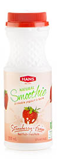

Back
Strawberry Yogurt

Strawberry Yogurt
Smoothie
200 mL
Ancient Romans believed strawberries symbolized perfection and uniqueness as it’s the only fruit with seeds on the outside. We tend to agree, the subtle flavour of our strawberry yogurt smoothie is a perfect complement to any meal.
Ingredients: Skim Milk, Sugar, Strawberry, Skim Milk Powder, Natural Flavour, Active Bacterial Culture
Nutritional Facts